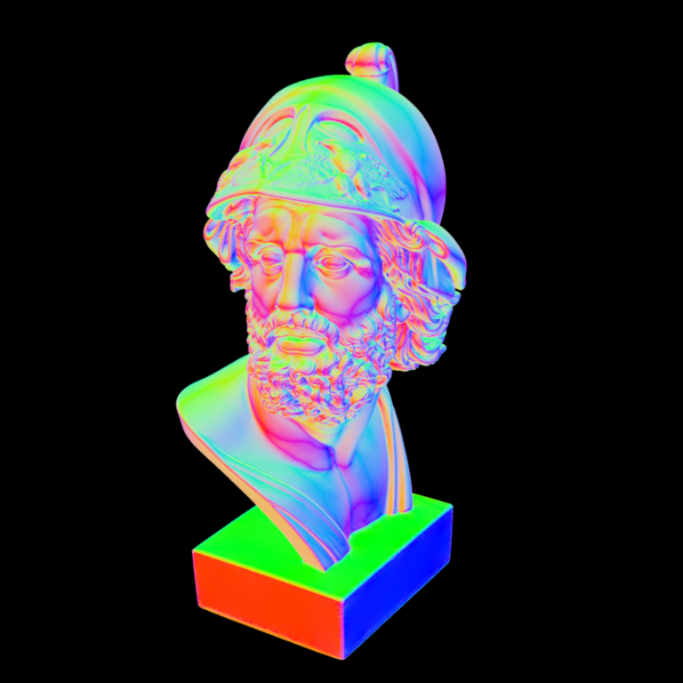
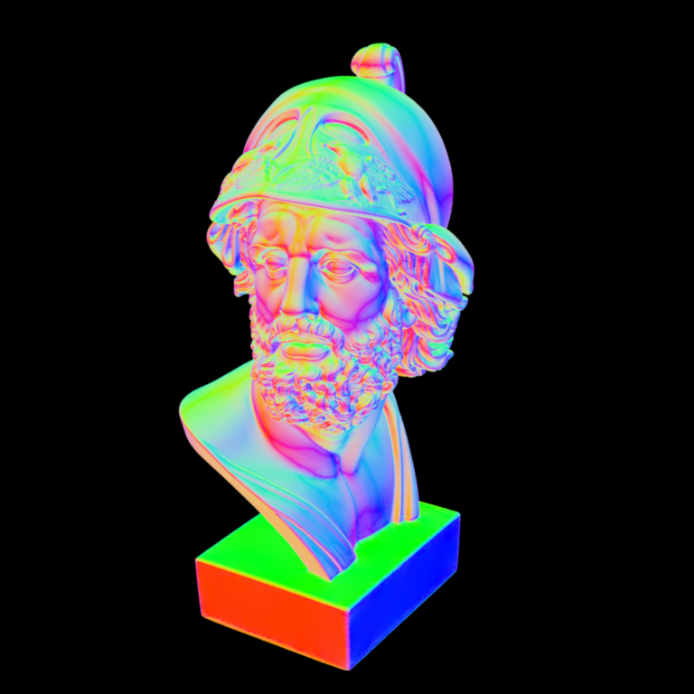
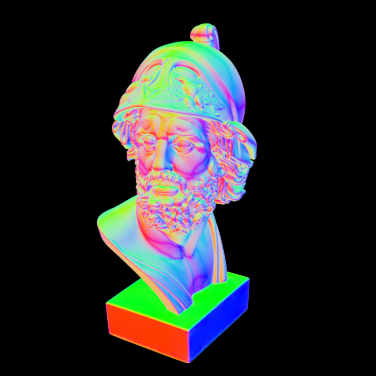

**Homework 2**
Student name: Qiyuan Liang
Sciper number: 323093
Octree construction (50 pts)
============================
The defined structure for the octree node
```cpp
struct OctreeNode {
OctreeNode *children[8]; // The children OctreeNode if not leaf
BoundingBox3f bbox; // The bounding box of the OctreeNode
uint32_t *leafTriangles; // A leaf triangle array
uint32_t leafSize; /* size of the leaf triangle array, if it
* is -1 (MAX_UINT32), then it is an
* internal node */
};
```
1. **General Design Choices**
The octree has two main types: 1) leaf nodes, which store the actual array of triangles; 2) internal nodes, which store the information about its eight children. To simplify the design, I have one `struct` to present all kinds of nodes. Therefore, both an array of triangles and an array of children are needed in the data structure. To store the array of triangles, I choose a pointer representation, instead of a static array. This allows easy handling of the case when the number of triangles is larger than 10. But using a dynamically allocated array requires additional information, the array size `uint32_t leafSize`, to be stored explicitly. There is no need to store the actual triangles inside the struct. We only need the index of the triangle in the mesh to find out the needed information in a later stage. This gives me `uint32_t *leafTriangles`. To store the 8 children of an internal node, I have a static array of OctreeNode pointers, `OctreeNode *children[8]`. To distinguish leaf nodes and internal nodes apart, I reuse the `uint32_t leafSize`. If `leafSize = (uint32_t) -1`, it indicates it is an internal nodes. Otherwise, it is a normal leaf node. Finally, to compute the intersection when calling `rayIntersect()` function, the bounding box of the node is also stored (`BoundingBox3f bbox`). To avoid the case that triangles can never be divided into a set with fewer than 10 elements, I limit the max depth of the tree to 8.
2. **Questions**
1. **What information do you store per octree node?**
**Answer**:
The information stored includes: 1. pointers to 8 children nodes (used when the node is an internal node); 2. a bounding box of the current octree node; 3. a pointer to an array of triangle indexes (used when the node is an non-empty leaf node); 4. a size of the leaf (to save space, `(uint32_t) -1` is used to indicate the node is an internal node, otherwise, it is a leaf node)
2. **How many bytes of memory does one of your octree nodes occupy?**
**Answer**: Total bytes = 100 bytes (in theory), 104 bytes (in practice, to make the struct 8-byte aligned)
```cpp
totBytesTheory = sizeof(OctreeNode *) * 8 + sizeof(BoundingBox3f)
+ sizeof(uint32_t *) + sizeof(uint32_t);
```
3. **Statistics for the Ajax scene:**
**Answer**: P.S. Max depth is set to 8 (root is at depth 0)
- Construction time: 663.2 ms (Average by 10 runs)
- Number of interior nodes: 88863
- Number of leaf nodes: 622042
- Average number of triangles per leaf node: 4.74
Ray traversal (25 pts)
======================
1. **General Design Choices**
Instead of doing the traversal of all triangles, we still need to traverse all valid triangles. To perform the task, and search the Octree efficiently, the following design is proposed:
1. Check whether the ray intersects with the root node's bounding box. If it does not, does not perform the recursion at all. This saves unnecessary stack allocation for function calls.
2. If it does intersect, we perform the recursion to search all valid OctreeNode. The recursion can be divided into two cases:
1. If the current node is an internal node, check all its children nodes if the children node satisfies all following conditions: 1) the children node is non-empty; 2) the children node's bounding box intersects with the ray. These two condition checks avoid unnecessary function calls, therefore, improving the execution speed.
2. If the current node is a leaf node, check all its triangles, and update the intersection point if found.
2. **Results**
Surface normal visualization of the Ajax bust, comparison between reference image and basic rendering:

3. **Questions**
1. **How long did it take to render the scene on your machine?**
**Answer**: It takes 2.8 seconds to finish all the rendering.
2. **How much of a speed-up did you achieve over what was there before? You may need to reduce both resolution and number of samples per pixel of the scene and extrapolate to obtain an estimate of the time required by the brute force algorithm (this is based on the reasonable assumption that the rendering time is proportional to the product of the number of pixels and samples per pixel.)**
**Answer**: The speed-up is approximately **4000x**. To obtain an estimate, I reduce the sample count to 1, and resolutions to 300x300. The time required for the brute force algorithm is: 2.7 minutes, and the time required for the Octree algorithm is: 41 ms.
Improved ray traversal (25 pts)
===============================
1. **General Design Choices**
The idea of the ordered traversal is that we only traverse possible children nodes if its nearT is smaller than the current intersection point's t. To avoid unnecessary tree traversal, we need to know the nearT of every children node for an internal node, and visit each children node in increasing order in terms of nearT. The tree pruning is at an additional cost: 1) the computation to calculate the nearT of every children node; 2) the memory consumption to store nearT of every children node for every ray, which can be substantial; 3) the sorting of the indexes given the nearT value. To minimize the cost, nearT is only computed on valid children nodes (if the leafSize != 0).
2. **Questions**
1. **Include the surface normal visualization of the Ajax bust rendered by both your basic and improved implementations. They should match perfectly.**
Surface normal visualization of the Ajax bust, comparison between basic rendering and improved implementation:
2. **How long did it take to render the scene on your machine with this improved version?**
**Answer**: It takes 2.2 seconds to finish all the rendering.
3. **How much of a speedup is this relative to Part 2?**
**Answer**: The speedup is 21%.
Bonus: Hacker Points (10 points)
================================
1. **General Design Choices**
In a serial construction, we start from the root, and construct the root's 8 children nodes in sequence. The same applies to every internal node. However, each internal node's children's construction is independent of each other. If we obtain all the materials to construct each children node in the first place, we can use the `parallel_for` feature of the TBB library to construct the octree in parallel.
The general design choice is as follows:
1. Prepare all triangle indexes for every children node of the root. This is done by passing a `remainingDepth` parameter to the `buildOctree()`. It allows us to construct a tree only root and its 8 leaf children.
2. Given the 8 leaf children nodes from step 1, we have all the materials to start the parallel execution, which is to build each real children node independently. Or in other words, we treat each children node of the root as a new root and pass along an array of triangles to build it.
2. **Performance**
There are only 8 children nodes, the maximum performance gain we could obtain is 8x in theory. In practice, there are situations of biased children tree, synchronization cost, and additional function calls, and the preparation phase is not run in parallel. The actual run time is reduced from 663.2 ms to 194.6 ms (Average by 10 runs). The performance gain is 3.4x.
Feedback
========
It would be much appreciated if some reference statistics is given in advance. For example, in which order of magnitude the performance of the Octree ray traversal would be better, compared to the brute-force one. This gives a general guideline and helps us to spot possible bugs in our design.
 
